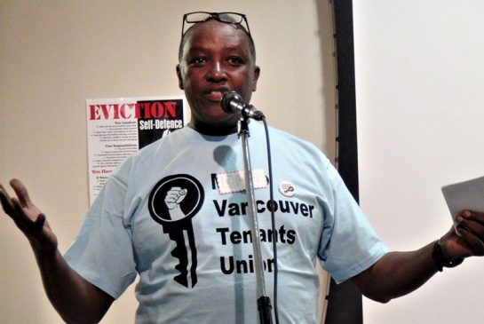
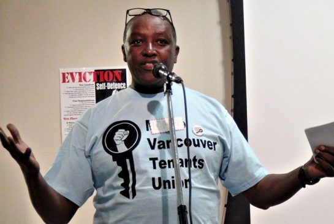
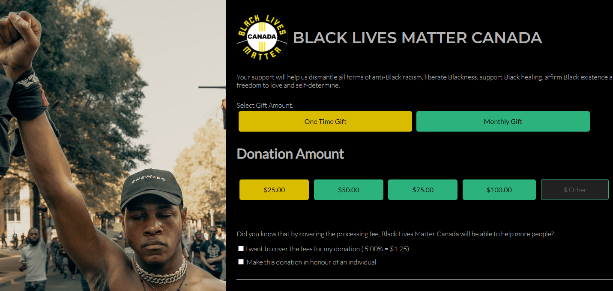
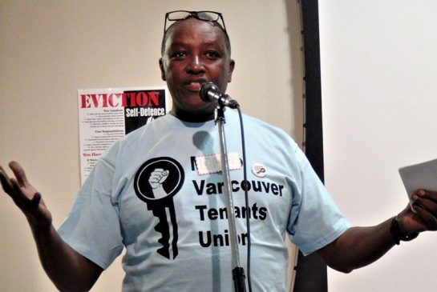

UBC SJI "Anti-Blackness" Groups
November 19th, 2020
Yesterday I wrote up an article on the UBC Social Justice Institute's "Statement on Anti-Blackness and the Killing of George Floyd and blah blah," which you can read here. At the very bottom of their article/statement, they had a list of all the Anti-White Organizations they were working with. A "partial list," they called it.

Image taken from their statement
Well, I decided to have a go at this list, and really work through these organizations one by one. Really see what they're all about, hopefully to catch them saying some anti-white things, but mostly just because I feel like I owe this to you, dear reader. We'll get to the "statements and calls to action," later.
First up, we have "Black Lives Matter Vancouver," and the link they give goes directly to a GoFundMe page, where I have to admit, I was impressed to find them raising $500,000.00 for Black Lives Matter Vancouver.
What's the purpose of the money raised? Well to quote them.
TDC_ARTICLE_START
Funds will be used for:
- vigil/protest supplies such as sustenance, banner-making material, transportation fees, blankets etc.
- venue rental
- honorariums for helpers and performers
- event promotion
- other costs associated with event planning
- bail money if ever needed
TDC_ARTICLE_STOP
Yeah I'm not really getting "serious, accountable organization," vibes here. More like "shit a bunch of blacks created to scam money out of shitlibs and jews," and I have to say, well played Jequeerus.
 Next up we have Hogan's Alley Society, Vancouver. Link here.
I have to say, this is a much more impressive website, at least compared to the GoFundMe page for Vancouver BLM. On top of this, their twitter account gets about 10-30 likes per tweet, and is updated every few days or so. This is in contrast to the BLM YVR twitter, which hasn't posted since September 19th, a full month ago, and seemed to go months without posting before.
I have some familiarity with the guy behind Hogan's Alley, Lama Mugabo, and the TL:DR of it is this: Blacks made a shithole in Vancouver, which was torn down for necessary water infrastructure. Then they whined about this, demanding "Black Only Spaces."

Next up we have Hogan's Alley Society, Vancouver. Link here.
I have to say, this is a much more impressive website, at least compared to the GoFundMe page for Vancouver BLM. On top of this, their twitter account gets about 10-30 likes per tweet, and is updated every few days or so. This is in contrast to the BLM YVR twitter, which hasn't posted since September 19th, a full month ago, and seemed to go months without posting before.
I have some familiarity with the guy behind Hogan's Alley, Lama Mugabo, and the TL:DR of it is this: Blacks made a shithole in Vancouver, which was torn down for necessary water infrastructure. Then they whined about this, demanding "Black Only Spaces."
Lama Mugabo
After this we have one of the most laughably obvious scams ever, the "Black in BC Community Support Fund for Covid19." This is unreal.
I'm trying to breeze through these groups, but this almost needs to be quoted in full.
TDC_ARTICLE_START
This Black community support initiative is a fundraiser for a low-barrier, emergency, micro-grant program for Black people in British Columbia, Canada, who are experiencing financial hardship due to the COVID-19 pandemic.
TDC_ARTICLE_STOP
This is black people using White People words that they don't really understand. Giving blacks money is not a "grant," it's just giving blacks money. Welfare is not a "grant," Shaniqua.
TDC_ARTICLE_START
The funds raised through this GoFundMe page will be distributed in one-time allotments of $150, to Black folks on a first-come, first-served basis. There is no expectation that the funds will be repaid, or that recipients will report back on how the money was spent. Our expectation is that the funds raised here will be used by recipients for their most urgent needs. We believe that if we work together, we can help ensure that Black people in BC survive this time of crisis.
TDC_ARTICLE_STOP
So this is straight up: "Give $150.00 to blacks." I have to admit, black grifters have this amazing effect, where I'm simultaneously laughing at them, yet also impressed. Can I really call these people dumb, when they managed to get $186,537.00 of cold hard shitlib cash?
Fuck, I oughta start pretending to be black to really soak in the dough here.
TDC_ARTICLE_START
- People identifying as Black; a descendent of the African/Caribbean Black diaspora; Black-mixed; Afro-LatinX; or Black Indigenous person WHO ARE ALSO,
- People residing in the Metro-Vancouver BC area, or British Columbia, Canada more broadly.
-Anticipating that there will be a lot of demand, priority will go towards the most vulnerable folks in our Black community. According to our collective values as team members, in no particular order, they are:
- Self-identified senior citizens and youths
- Disabled community members
- LGBTQ2SIA+
- Caregivers & guardians of children under 18
- Vulnerable, self-identified women
- International students
- Refugees
TDC_ARTICLE_STOP
LGBTQ2SIA+, I'm pretty sure that's not a thing. I'm pretty sure that you hit a few keys simultaneously and then pretended you had a new sexual orientation. But hey, at least the black members of the LGTBQ2SIA+ community are being well taken care of.
 Alrighty let's keep knocking this list out. Next up, the UBC Black Student Union, and I swear to god it's just a poorly updated Instagram Page. Here's one of the images I found on there. Most of the other pictures are some black persons face, presumably a member of the union.
Alrighty let's keep knocking this list out. Next up, the UBC Black Student Union, and I swear to god it's just a poorly updated Instagram Page. Here's one of the images I found on there. Most of the other pictures are some black persons face, presumably a member of the union.
 This threat to Whiteness cannot go unchallenged. These people are posting, on Instagram.
Anyway moving forwards. The next is a link to ANOTHER FUCKING GOFUNDME HOLY SHIT. This one the Official George Floyd Memorial Fund, started in St. Paul, Minnesota, where George Floyd ingested his own stash of Fentanyl.
Next, you won't believe this. ANOTHER FUCKING FUNDRAISER, this time to the National Bail Fund, a seemingly serious group, probably run by Schlomo, that takes donations and uses them to get, or at least claims to get, black people out of jail on bail. They don't even pretend to be operating in Canada, so whatever.
This threat to Whiteness cannot go unchallenged. These people are posting, on Instagram.
Anyway moving forwards. The next is a link to ANOTHER FUCKING GOFUNDME HOLY SHIT. This one the Official George Floyd Memorial Fund, started in St. Paul, Minnesota, where George Floyd ingested his own stash of Fentanyl.
Next, you won't believe this. ANOTHER FUCKING FUNDRAISER, this time to the National Bail Fund, a seemingly serious group, probably run by Schlomo, that takes donations and uses them to get, or at least claims to get, black people out of jail on bail. They don't even pretend to be operating in Canada, so whatever.

Yes, they also want your money
Penultimately, we have the link to BLM Toronto. Or at least they claim BLM Toronto. When I click the link, I'm taken to BLM Canada, but I'll just assume that's the very same thing. You are going to be absolutely shocked to see that the very first thing you will see upon visiting this link is this...

Yes that's right, pay me paypiggy.
Finally, we have the Black Muslim Initiative, which manages to have the grace to not be demanding money. In fact, it's the only group, other than Hogan's Alley, which gets at what I was trying to see earlier. A group serious about advancing political goals, instead of transfering money from the pockets of shitlibs to Shaniqua. As an example of what I mean:
 Unlike the other groups above, this group is worth understanding on a deeper level, because it's not just a grift. I took a look at their upcoming events, and all I saw was this:
Yes, that is an event for August,2020, still in the "Upcoming Events," part of their site. So I've got a little theory here, as to what's going on. What's happening is that this is a NGO getting your taxdollars. As a result, they both don't have a huge need to shill for shekels, as well as also having a requirement to have the barest minimum of class and competence. Not too much, as we can see from the above image, but enough. The tone of this website is completely different from the Shaniqua Scams above. Almost like a low end government website.
However, I don't think they're worth looking into all that much more, because the appearance of polished competence quickly fades upon closer inspection. Again, as shown by the above image.
Unlike the other groups above, this group is worth understanding on a deeper level, because it's not just a grift. I took a look at their upcoming events, and all I saw was this:
Yes, that is an event for August,2020, still in the "Upcoming Events," part of their site. So I've got a little theory here, as to what's going on. What's happening is that this is a NGO getting your taxdollars. As a result, they both don't have a huge need to shill for shekels, as well as also having a requirement to have the barest minimum of class and competence. Not too much, as we can see from the above image, but enough. The tone of this website is completely different from the Shaniqua Scams above. Almost like a low end government website.
However, I don't think they're worth looking into all that much more, because the appearance of polished competence quickly fades upon closer inspection. Again, as shown by the above image.

Pallet Cleanser
In summary, this is basically all a joke. I was hoping to find more serious things, but this is just all a joke. 80% scammers, plus 20% possibly tax funded NGO's. In one sense it's extremely encouraging, since this shows that, well, these people are jokes. And it also shows how astroturfed all this is, if that wasn't evident enough.
What this means for the UBC Social Justice Institute is pretty funny though, since they, on their own page, are linking to some of the funniest Shaniqua Scams I have ever seen, although in fairness, I haven't seen all that many.
Next up we have Hogan's Alley Society, Vancouver. Link here.
I have to say, this is a much more impressive website, at least compared to the GoFundMe page for Vancouver BLM. On top of this, their twitter account gets about 10-30 likes per tweet, and is updated every few days or so. This is in contrast to the BLM YVR twitter, which hasn't posted since September 19th, a full month ago, and seemed to go months without posting before.
I have some familiarity with the guy behind Hogan's Alley, Lama Mugabo, and the TL:DR of it is this: Blacks made a shithole in Vancouver, which was torn down for necessary water infrastructure. Then they whined about this, demanding "Black Only Spaces."

Alrighty let's keep knocking this list out. Next up, the UBC Black Student Union, and I swear to god it's just a poorly updated Instagram Page. Here's one of the images I found on there. Most of the other pictures are some black persons face, presumably a member of the union.
This threat to Whiteness cannot go unchallenged. These people are posting, on Instagram.
Anyway moving forwards. The next is a link to ANOTHER FUCKING GOFUNDME HOLY SHIT. This one the Official George Floyd Memorial Fund, started in St. Paul, Minnesota, where George Floyd ingested his own stash of Fentanyl.
Next, you won't believe this. ANOTHER FUCKING FUNDRAISER, this time to the National Bail Fund, a seemingly serious group, probably run by Schlomo, that takes donations and uses them to get, or at least claims to get, black people out of jail on bail. They don't even pretend to be operating in Canada, so whatever.
Unlike the other groups above, this group is worth understanding on a deeper level, because it's not just a grift. I took a look at their upcoming events, and all I saw was this:
Yes, that is an event for August,2020, still in the "Upcoming Events," part of their site. So I've got a little theory here, as to what's going on. What's happening is that this is a NGO getting your taxdollars. As a result, they both don't have a huge need to shill for shekels, as well as also having a requirement to have the barest minimum of class and competence. Not too much, as we can see from the above image, but enough. The tone of this website is completely different from the Shaniqua Scams above. Almost like a low end government website.
However, I don't think they're worth looking into all that much more, because the appearance of polished competence quickly fades upon closer inspection. Again, as shown by the above image.